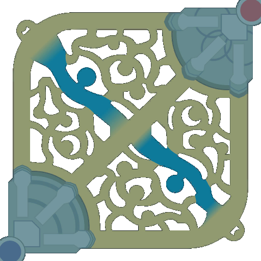

2025 賽季 · LCK／LPL／世界賽
載入中

預示者與巴龍共用上半區巢穴，圖標分開顯示以便點選。
依篩選條件顯示出賽最多的三組隊伍／場域
各比例的分母為該物件有紀錄的局數
取得率以有紀錄局數為分母，包含未取得物件的對局。預示者在只有唯一取得方時可由總數推得。
依場域、隊伍與位置計算。顯示前五名，搜尋選手可查看完整英雄分布。
4/1 起逐日回測，僅使用前一日及更早的資料。基準為同場域歷史結果頻率。模型加入隊伍、時間與版本權重。Log loss 越低越好。